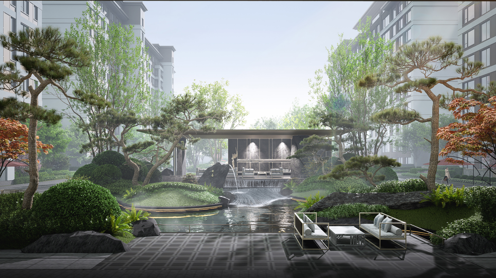

景观方案设计
方案构思、概念推演、空间布局与设计策略。
LANDSCAPE ARCHITECTURE · PORTFOLIO
SELECTED WORKS / 2022—2026
以场地为起点，以自然为灵感。 探索人与空间、植物与环境之间的平衡， 创造兼具功能、美感与体验的景观空间。

ABOUT THE DESIGNER
专注于景观方案设计与空间表达，关注场地特征、使用者需求、 植物营造和整体空间体验。希望通过清晰的设计逻辑与细致的 图面表达，将概念转化为具有落地价值的景观方案。
查看完整项目经历 ↗WHAT I DO
方案构思、概念推演、空间布局与设计策略。
功能分区、交通流线、场地组织与空间尺度。
场地解读、问题梳理、设计逻辑与分析图表达。
植物层次、季相搭配、空间氛围与种植设计。
景观场景表现、图面氛围营造与视觉叙事。
设计汇报、方案文本、版式组织与成果整合。
注：以上为能力展示模块，可根据实际项目经验及熟练程度调整。
SELECTED PROJECTS
从场地研究到空间营造，记录每一次设计探索。
点击任意项目图片，可放大查看。
THANK YOU FOR VIEWING